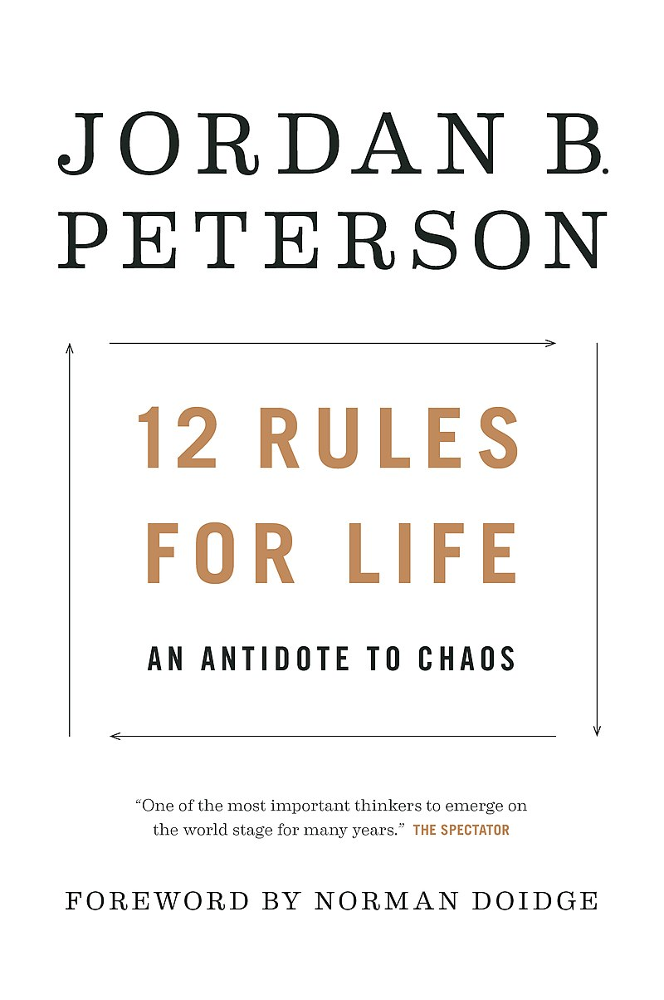

|
|
12 Rules for Life: An Antidote to Chaos is a 2018 self-help book by the Canadian clinical psychologist Jordan Peterson.
It provides life advice through essays in abstract ethical principles, psychology, mythology, religion, and personal anecdotes.
The book topped bestseller lists in Canada, the United States, and the United Kingdom, and has sold over five million copies worldwide.
Peterson went on a world tour to promote the book, receiving much attention following an interview with Channel 4 News.
The book is written in a more accessible style than his previous academic book, Maps of Meaning: The Architecture of Belief (1999).
A sequel, Beyond Order: 12 More Rules for Life, was published in March 2021.
|

|